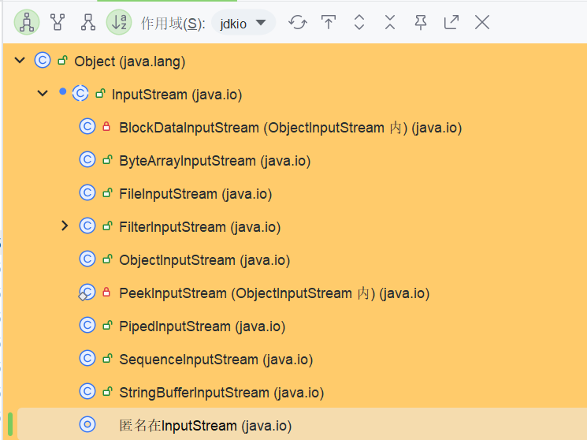
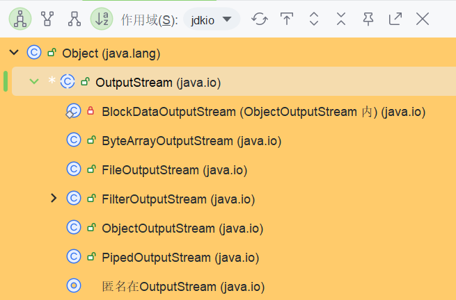
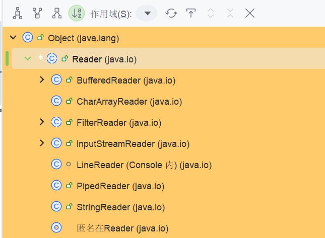
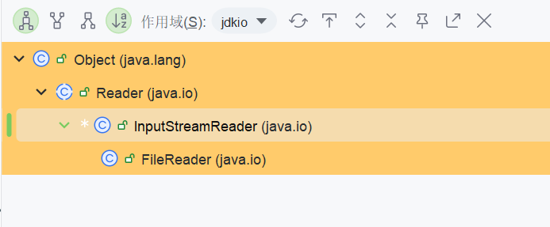

Java/Scala I/O¶
基础¶
传输方式分类¶
从传输方式来看，分为字节流和字符流。
字节流¶
命名格式：xxxStream
InputStream
This abstract class is the superclass of all classes representing an input stream of bytes. Applications that need to define a subclass of InputStream must always provide a method that returns the next byte of input.

OutputStream
This abstract class is the superclass of all classes representing an output stream of bytes. An output stream accepts output bytes and sends them to some sink. Applications that need to define a subclass of OutputStream must always provide at least a method that writes one byte of output.

字符流¶
Reader
Abstract class for reading character streams. The only methods that a subclass must implement are read(char[], int, int) and close(). Most subclasses, however, will override some of the methods defined here in order to provide higher efficiency, additional functionality, or both.

Writer
Abstract class for writing to character streams. The only methods that a subclass must implement are write(char[], int, int), flush(), and close(). Most subclasses, however, will override some of the methods defined here in order to provide higher efficiency, additional functionality, or both.

相互转换¶
这里的流都是字符流，但是都以字节流作为构造参数进行包装。
也就是一个从文件读数据，可以在读取的时候进行decode，在输出的时候进行encode
InputStreamReader
An InputStreamReader is a bridge from byte streams to character streams: It reads bytes and decodes them into characters using a specified charset. The charset that it uses may be specified by name or may be given explicitly, or the platform's default charset may be accepted. Each invocation of one of an InputStreamReader's read() methods may cause one or more bytes to be read from the underlying byte-input stream. To enable the efficient conversion of bytes to characters, more bytes may be read ahead from the underlying stream than are necessary to satisfy the current read operation. For top efficiency, consider wrapping an InputStreamReader within a BufferedReader. For example: BufferedReader in = new BufferedReader(new InputStreamReader(System. in));

InputStreamReader用来对字节流进行包装，所以需要其作为构造参数传入。
可以看到JDK给用户额外封装好了一个FileReader，用于方便文件读取，其使用FileInputStream作为构造参数。
Reads text from character files using a default buffer size. Decoding from bytes to characters uses either a specified charset or the platform's default charset. The FileReader is meant for reading streams of characters. For reading streams of raw bytes, consider using a FileInputStream.
OutputStreamWriter
An OutputStreamWriter is a bridge from character streams to byte streams: Characters written to it are encoded into bytes using a specified charset. The charset that it uses may be specified by name or may be given explicitly, or the platform's default charset may be accepted. Each invocation of a write() method causes the encoding converter to be invoked on the given character(s). The resulting bytes are accumulated in a buffer before being written to the underlying output stream. Note that the characters passed to the write() methods are not buffered. For top efficiency, consider wrapping an OutputStreamWriter within a BufferedWriter so as to avoid frequent converter invocations. For example: Writer out = new BufferedWriter(new OutputStreamWriter(System. out));
同样封装了一个FileWriter
设计思路¶
装饰者模式¶
JDK IO整体采用装饰者模型进行设计。
简单来讲，如果要设计一个MyReader，只用继承，可能会设计成如下：
- MyReader
- MyFileReader
- MyMusicReader
- MyxxxReader
当想要把所有流增加Buffer功能的时候，就需要更深一级的继承。
要解决层级太深的问题，可以在用户线程与具体类的使用之间，加一层进行解耦。
具体而言，将修饰功能的类单独抽离出来，并继承/实现MyReader。
然后在该类中拿到被修饰者作为字段，这里使用多态可以将类型声明为父接口即可。
| Java | |
|---|---|
1 2 3 4 5 6 7 | |
以后用户线程直接调用的都是该增强类的方法,然后由该类统一增强，除了增强逻辑之外，其他部分都与被增强的类耦合。
BufferedReader¶
具体来看BufferedReader
字段
| Java | |
|---|---|
1 2 3 4 | |
其他字段均为实现增强功能所需要的字段。
构造方法
| Text Only | |
|---|---|
1 2 3 4 5 6 7 8 9 10 11 12 13 14 15 16 17 | |
read
| Java | |
|---|---|
1 2 3 4 5 6 7 8 9 10 11 12 13 14 15 16 17 18 19 20 21 22 23 24 25 26 27 28 | |
这里读取单个字符，里面调用的是fill方法来读取单个字符到缓冲区，其核心逻辑如下：
| Java | |
|---|---|
1 2 3 4 5 6 7 8 | |
可以看到，最终其实还是调用的被修饰类的方法，但是实现了增强功能与基础功能解耦，由继承变为组合，灵活更强的好处。
Files工具类¶
从JDK7开始，提供的文件/目录操作工具类，封装了很多常用的逻辑。
Path¶
An object that may be used to locate a file in a file system. It will typically represent a system dependent file path. A Path represents a path that is hierarchical and composed of a sequence of directory and file name elements separated by a special separator or delimiter. A root component, that identifies a file system hierarchy, may also be present. The name element that is farthest from the root of the directory hierarchy is the name of a file or directory. The other name elements are directory names. A Path can represent a root, a root and a sequence of names, or simply one or more name elements. A Path is considered to be an empty path if it consists solely of one name element that is empty. Accessing a file using an empty path is equivalent to accessing the default directory of the file system. Path defines the getFileName, getParent, getRoot, and subpath methods to access the path components or a subsequence of its name elements.
说明了其就是用于在文件系统中定位文件的类。
文档中还给了一个简单的例子：
| Java | |
|---|---|
1 2 3 | |
创建path
使用Path.of方法进行创建，参数可以是文件路径/URL。这里要注意idea运行时配置的默认工作路径。
| Java | |
|---|---|
1 2 3 4 5 6 7 8 9 10 11 12 | |
Files¶
创建文件/目录
- create[Temp]File
- create[Temp]Directory
增删改查
- 增
- createFile
- ...
- 删
- delete
- deteleIfexists
- 改
- newInput/OutputStream
- newBufferedReader/Writer
- move/copy
- 查
- exists
- ....
I/O 模型¶
Unix-like IO¶
前置知识¶
文件描述符 & 打开文件表 & inode表
关于文件描述符，文件句柄，以及inode:
彻底搞懂文件描述符/文件句柄/文件指针的区别与联系-CSDN博客
都知道OS中一个进程维护一个PCB，其用于控制进程，并维护进程的上下文信息。其中就包括了一个file descriptor table。这是一个Array[filedescriptor]。而一个文件描述符fd，就是用来获取对应的filedescriptor的，也就是filedescriptor curfd = arr(fd)。其有一个字段指向了file结构，也就是file curfile = curfd.file
OS中维护了一个全局open file table，这是一个Array[file],维护了所有被打开文件的信息，比如offset,mode等，以及最重要的inode 指针。这里的index，就称为文件描述/文件句柄。也就是file curfile = arr(handle)。
window下通常将一组指针/引用对应的数据的下标称为
句柄。
然后就是inode table。
inode是unix文件系统中的数据结构，用于描述文件系统对象，包括文件，目录，socket等，其中有文件创建者，模式等信息，并存储着block指针。一个文件如果要存储，则需要存储元数据信息，以及其本身数据信息两部分内容。而unix文件系统，一般初始化的时候就把存储区域分为两部分，分别用于存储这两部分信息。
文件系统对象才是一个文件系统中的标准描述，而文件/目录都只是别名。
- 元数据部分就是
inode组成的表，一个inode一般占据256/128字节。 - 数据部分以
block形式存储，一个block为4KB。
在操作系统内存中，对应着inode cache以及page cache。
网卡到用户进程
内功修炼-网络数据包的发送、传输、接受过程 - 沉迷于学习，无法自拔^_^ (hlog.cc)
ring buffer：环形缓冲区，这里的实现内部有两个环形数组，一个是内核驱动使用，一个是网卡硬件使用。两者可以通过
share同一块内核内存来实现消费者-生产者模式，比如skb_buffer。DMA：数据传输技术，将数据不通过CPU，而是通过总线，来直接从外设缓冲区复制到内核内存，或者另一个外设缓冲区。
- 数据以高低电平形式来到网卡，被网卡硬件转换为数据并刷到
FIFO缓冲区，然后网卡申请skb_buffer的引用，然后数据就可以通过DMA方式，从fifo-buffer到skb_buffer。 - 硬中断：由于是
DMA写入，内核无法监控，所以需要发起中断，这里网卡会触发硬中断，然后处理程序来调用Driver来处理 - 软中断：
Driver处理完毕，触发软中断，由内核中的专门进程处理，这里中断处理程序会调用网卡Driver所对应的处理函数。 - 驱动处理：由网卡驱动对数据进行格式处理。处理完毕传递给
协议栈 - 协议栈到
socket：协议栈经过处理，并且可以拿到数据的端口，IP信息，将数据发送到scoket buffer,然后给socket信号说明有数据来了。一个socket有两个buffer，分别用于发送数据和接收数据。 - 应用进程响应
- 阻塞式，则
receivefrom函数阻塞直到数据过来，然后将数据存储到用户进程内存。 - 非阻塞式：使用
poll/select监听socket,有数据过来，就读取数据
阻塞式IO¶
就是线程调用函数receivefrom之后，如果socket buffer无数据，则阻塞，期间进程OS挂起然后加入队列进行调度。
直到socket buffer有数据，则操作系统可以重新执行该进程，该函数将数据从socket buffer 复制到 用户进程的buf。
receivefrom函数原型：
| C | |
|---|---|
1 2 | |
可以看到，其拿到socket文件描述符，以及buf指针，并将数据从socket buffer复制到进程buf。
非阻塞式IO¶
用户执行recvfrom之后，如果socket buffer没有数据，进程不被阻塞，而是一直轮询，比如在一个while循环中间接性调用该函数。
如果socket buffer有数据，则立刻可以返回。
与阻塞式IO区别
区别就是信息的控制方不同。当然非阻塞式IO可以尽力细化粒度(比如Thread.sleep的间隔减小)的进行控制，但是由于其无法控制信息，则只能同时将压力给到用户进程。阻塞时候控制权重新交给了OS，则无法精确满足要求。
I/O复用¶
将感兴趣的多个socket文件描述符维护起来，然后调用select将程序阻塞并挂起。
如果有一个socket发生了变化，则select会立即返回。此时可以再使用recvfrom将数据从socket buffer复制到进程内存区域。
其使得单个进程有了处理多个event的能力，而不是一个线程一个socket连接。
信号驱动I/O¶
应用进程发送sigaction调用，此时主线程不会被阻塞。如果有socket buffer无数据，则直接return。如果有数据，则返回信号，通知用户进程可以开始读数据。此时用户线程可以执行recvfrom。
相比于非阻塞式IO，CPU浪费较少。
异步I/O¶
执行异步io，调用立即返回，内核完成所有事情，向进程发送信号，通知用户进程IO任务已经完毕
Reactor模型¶
Reactor模型是整个NIO的实现基础。也称为Dispatcher模型。对于Spark熟悉的人肯定知道,Spark rpc的核心就是Dispatcher。
这里的NIO采用多reactor多线程的模式。
Client发送请求之后，被主线程的main Reactor 通过selector收到并进行Dispatch，发送到主线程的Acceptor，获取连接(accept)。
获取连接之后，主线程将其分发到子线程的sub Reactor中。在子线程中，同样是连接被加入到selelctor中，再次等待被选中。
子线程中的selelctor返回之后，则可以通过Handler进行业务逻辑处理。
这里主线程和子线程分工明确：
- 主线程只用于创建连接
- 子线程只用于处理业务逻辑，并且可以将结果发送给客户端
Netty中亦有BOSS GROUP以及Worker GROUP
NIO¶
从JDK4引入，高速并且面向块。
基础概念¶
传统的InputStream/OutputStream是基于单个Byte的，但是这里的NIO基于的是Block，也就是Byte[]。
核心组件¶
Channel
A channel represents an open connection to an entity such as a hardware device, a file, a network socket, or a program component that is capable of performing one or more distinct I/ O operations, for example reading or writing. A channel is either open or closed. A channel is open upon creation, and once closed it remains closed. Once a channel is closed, any attempt to invoke an I/ O operation upon it will cause a ClosedChannelException to be thrown. Whether or not a channel is open may be tested by invoking its isOpen method. Channels are, in general, intended to be safe for multithreaded access as described in the specifications of the interfaces and classes that extend and implement this interface.
简单来说，就是面向文件/socket/其它用于IO的组件的一种连接。
其状态具有二值性：open & close，而不是和SQL & 分布式系统那种的三值语义。
| Java | |
|---|---|
1 2 3 4 5 6 7 8 9 10 11 12 13 14 15 16 17 18 19 20 21 22 23 24 25 26 27 28 29 | |
Buffer
A container for data of a specific primitive type.
是一种线性的，面相特定数据类型(Int,Char等)的容器。
通过三个核心变量操作：
A buffer's capacity is the number of elements it contains. The capacity of a buffer is never negative and never changes. A buffer's limit is the index of the first element that should not be read or written. A buffer's limit is never negative and is never greater than its capacity. A buffer's position is the index of the next element to be read or written. A buffer's position is never negative and is never greater than its limit.
channel过来的数据以及发送给其的数据必须到buffer中，也就是其常作为参数传入read/write方法中。
其中的position即是下一个要读取的位置，也是当前已经读取的字节数:
x - 1 - 0 + 1 = x
以ByteBuffer为例，常见方法如下：
- 初始化：
ByteBuffer.allocate(16) 从channel读数据到buffer：int readbytes = channel.read(buf) / buf.put([i])从buffer写数据到channel：int writebytes = channel.write(buf) / buf.get()- mark & reset：在某个pos做标记，然后reset就可以回到这里
如下：
| Java | |
|---|---|
1 2 3 4 5 6 7 8 9 10 11 12 13 14 15 16 17 18 | |
则这段程序的llo被重新又输出了一遍。
Selector
这里就是IO多路复用模型上的select。这里JDK已经将与socket/file的连接抽象为Channel，则Selcetor只需要监听多个Channel既可以达到多路复用。
如果是SocketChannel，可以配置为非阻塞。这时候Selector可以同时监听一批Channel，而不是在一个上面阻塞。
Selector可以同时监听ServerSocketChannel以及SocketChannel，而如果来的是OP_ACCEPT，则必然是SSChannel的请求，因为只有它用于处理连接。其bind方法解释如下:
Binds the channel's socket to a local address and configures the socket to listen for connections.
而accpet方法就是建立连接。
例子¶
| Java | |
|---|---|
1 2 3 4 5 6 7 8 9 10 11 12 13 14 15 16 17 18 19 20 21 22 23 24 25 26 27 28 29 30 31 32 33 34 35 36 37 38 39 40 41 42 43 44 45 46 47 48 49 50 51 52 | |
则此时将数据从client写入socket即可在server得到响应。